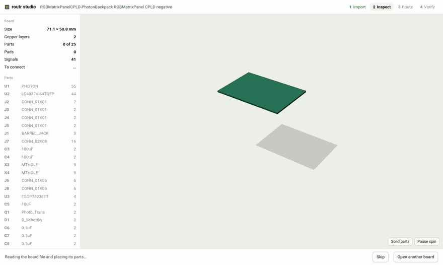
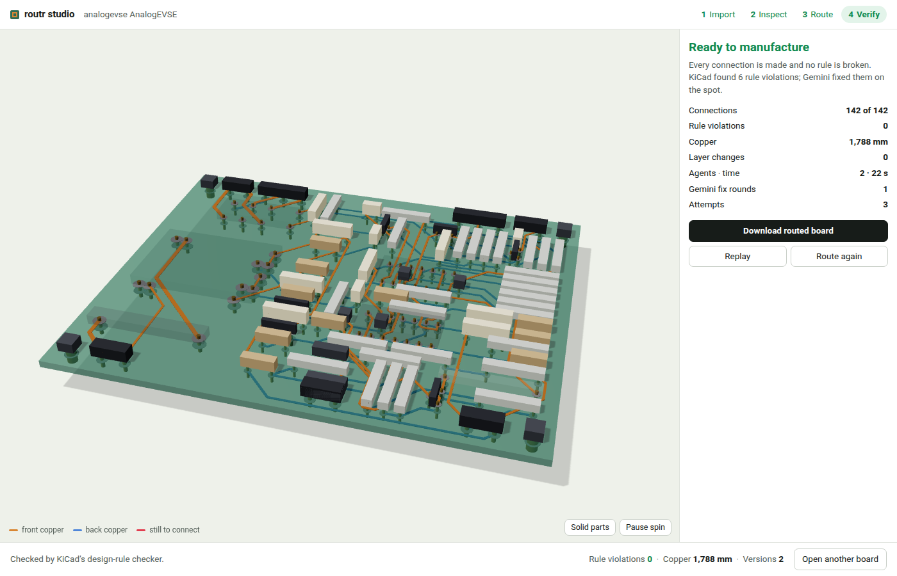

routr is a swarm of Gemini AI agents that finishes electronics designs where people and classic tools get stuck. The agents come up with the ideas. A real engineering checker tests every one before it counts.

A stuck design goes in. Hundreds of agent calls attack it from every side. Only the ideas that pass the checker come out.
Counted from our own run logs when this page was built. Where a log did not record tokens, none are counted, so these numbers are a minimum.
Fast agents that try fixes side by side, each with its own style: careful, bold, power-aware.
Thinks the hardest. Reads every failure so far and sends each worker in a different direction.
Looks at pictures (the board, the frequency plot) and points out what looks wrong.
Answers yes/no questions in about a second, with a confidence, so the team skips bad ideas.
KiCad's rule checker and a circuit simulator. The agents never grade their own work.
The agents get a picture of the design, the rules, and every earlier try.
Each one suggests a fix in its own style. The screener drops the weak ones.
The real checker tries every fix. No AI grades its own work.
The best design so far is saved. The next round starts from it.
The agents make decisions. Deterministic engineering tools do the drawing, the simulating and the grading. That split is why the results can be trusted.
A sign-off agent (Gemini Managed Agent) gets the circuit but not our evaluator. It writes its own testbench, calibrates it against the circuit authors' published numbers and re-simulates with the full SkyWater library: it matched our judge at 15 of 15 corners.
A red-team agent read our evaluator's source and tried to make it report a false pass. It found 6 confirmed weaknesses (4 high severity), each backed by real simulation evidence, and wrote test cases for them. A person reviews each one; nothing is applied automatically.
Managed agents keep their whole history and files between turns. The red-team run lasted 20 turns and about 1.5 million tokens. Its budgets (tool calls and wall-clock time) are enforced on our side, not left to the agent.
A board with one missing connection is scrap. On the 10 hardest boards in the PCBWorld benchmark:
It has to pass at 15 combinations of heat, cold, supply voltage and manufacturing variation, all at once.
